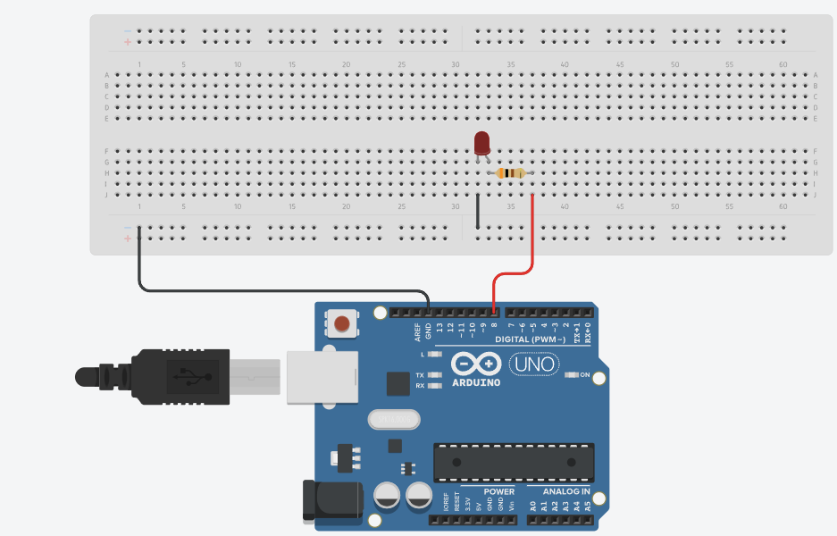
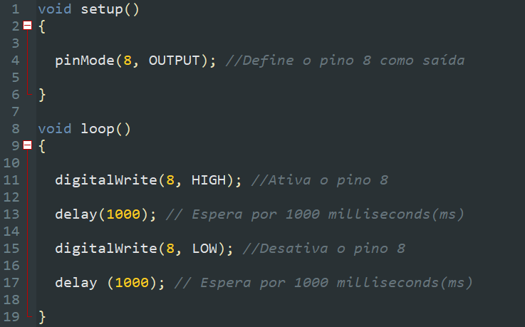
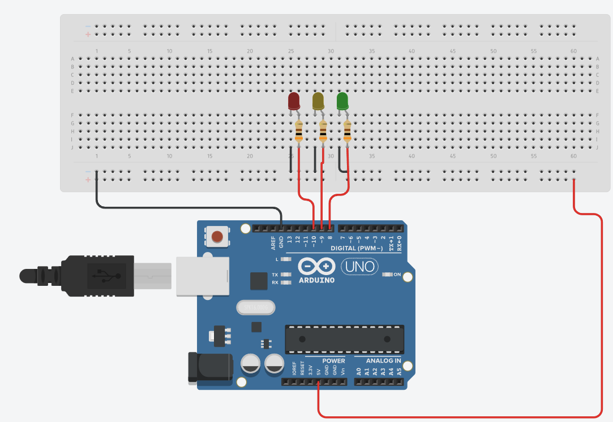
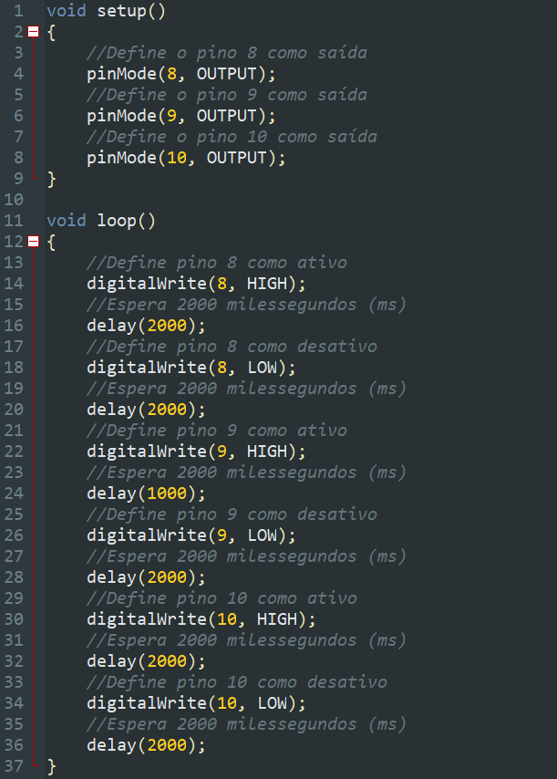

Simuladores de robótica
Utilizando simulador de robótica
Para o desenvolvimento de robôs é muito importante ter um projeto. Algo que pode facilitar esse processo de criação são os simuladores de robótica. Aqui utilizaremos o Tinkercad para simular os componentes e os códigos.
Vamos por a mão na massa? O primeiro projeto que iremos criar é um sistema que acende e apaga um LED. A construção da eletrônica é a seguinte:
O código utilizado para fazê-lo funcionar foi:
Vamos partir para outra prática? Agora iremos criar uma espécie de sinaleiro, contendo 3 LEDs (um vermelho, um amarelo e um verde). O circuito é o seguinte:
O código utilizado foi o seguinte:
